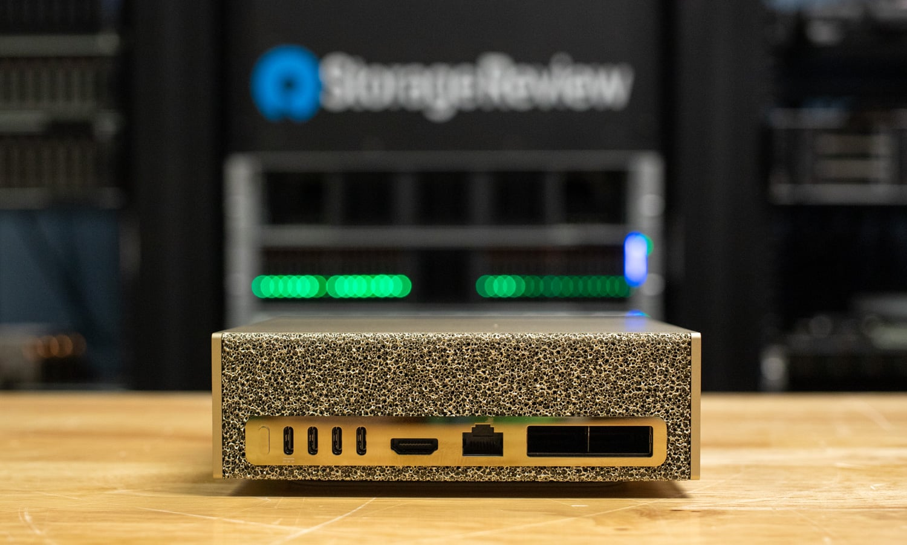

StorageReview — американская лаборатория системного хранения, и свой рейтинг «Best Desktops for Local AI in 2026» (обновление от 2 октября) они построили на собственных замерах: живое обслуживание через vLLM, время до первого токена и время на токен генерации для GPT-OSS-120B, Llama 3.1 8B, Mistral Small 3.1 24B и Qwen3 Coder 30B, плюс эффективность по MAMF и тесты подсистемы хранения. Их принцип: ни одна система не попала в рейтинг «по даташиту». Главный водораздел 2026 года они видят в выборе: унифицированная память (GB10/Strix Halo — держат модель, которую иначе только на кластере дискретных GPU) против отдельной VRAM (RTX PRO 6000 — в разы больше токенов в секунду за в разы большие деньги и ватты).
Абсолютный лидер настольного класса — NVIDIA DGX Spark (128 ГБ унифицированной LPDDR5X, два порта ConnectX-7, кластеризация из коробки). Лучшей реализацией того же чипа GB10 признан Acer Veriton GN100 — все GB10-коробки идентичны по железу, и решало охлаждение: у Veriton оно оказалось образцовым в единственном известном мне сравнительном термо-тесте. Лучшая x86-альтернатива — AMD Ryzen AI Halo на Strix Halo (до 128 ГБ унифицированной памяти, тянут модели 200B-класса без отказа от Windows). HP Z2 Mini G1a умудряется гонять GPT-OSS 120B вообще без дискретной видеокарты. В башенном классе — Dell Precision 7875 и HP Z8 Fury (2–4× RTX PRO 6000, до 384 ГБ GDDR7), а «экстремальный» ящик — Comino Grando с восемью RTX PRO 6000 и 768 ГБ GDDR7.
Отдельная категория — MSI XpertStation WS300 на GB300 (DGX Station): 748 ГБ согласованной памяти (252 ГБ HBM3e + 496 ГБ LPDDR5X), 20 петафлопс FP4 — в лаборатории он обслужил чекпоинт GLM-5.2 весом 433 ГБ, «модель, которой не место рядом со столом». Обратная сторона медали есть у всех GB10-коробок: накопитель — один короткий M.2, практически потолок 4 ТБ. Лаборатория предложила свой ответ: общий QLC-массив на 8 Spark через 100GbE — чтение 10,8 ГиБ/с, загрузка 78-гигабайтной модели центрально всего на 13% медленнее локального NVMe.
Свежую вставку про новый 64-гигабайтный SKU Spark ($4999, старт 23 октября, те же шесть OEM) я сверила с анонсом NVIDIA от 2 октября — цифры совпадают (первопроверяемая новость у нас разобрана отдельно). Отдельно отмечу честность авторов: громкое «два 64-гигабайтных Spark в паре дают 1,7x одиночного 128-гигабайтного» они явно помечают как «ещё не проверено в нашей лаборатории» — обещание вендора, а не измеренный факт. Русскоязычная версия страницы — автоперевод самого сайта: storagereview.com/ru/best/desktops-local-ai; все цифры статьи сверены по английскому оригиналу. Для первоисточника-лаборатории отдельных внешних анонсов нет — рейтинг и есть первоисточник.